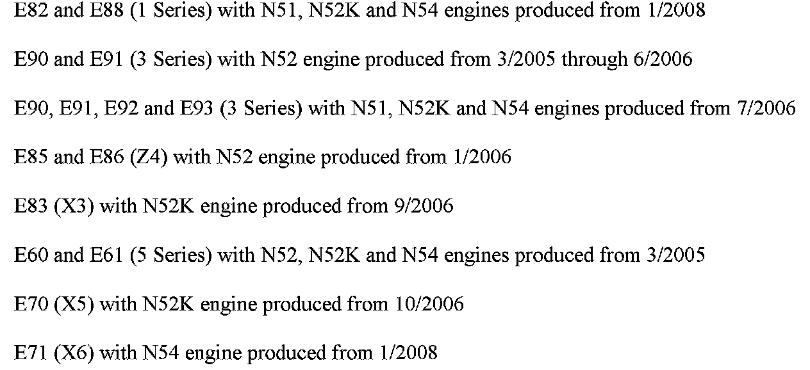
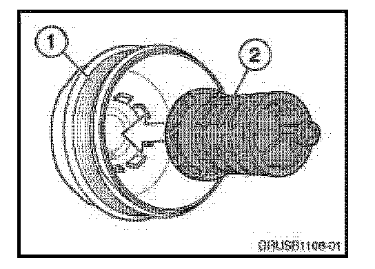
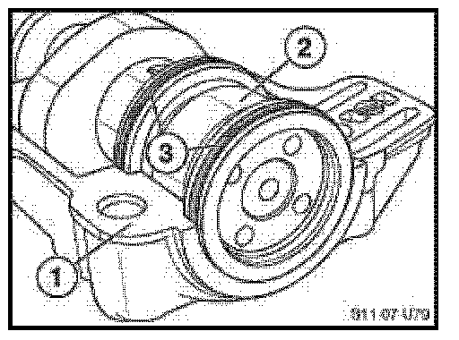
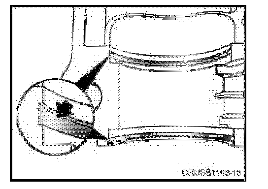
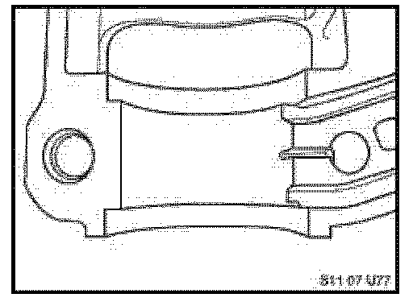
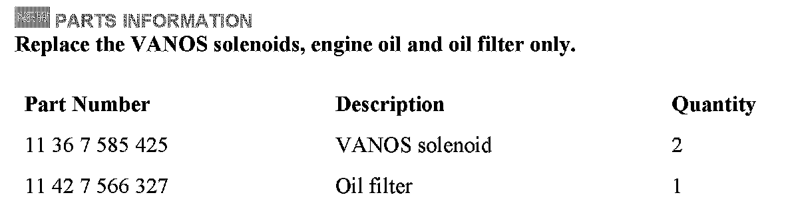
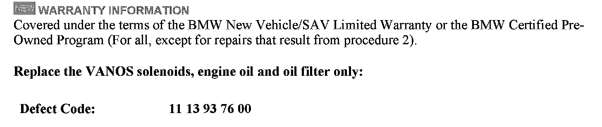
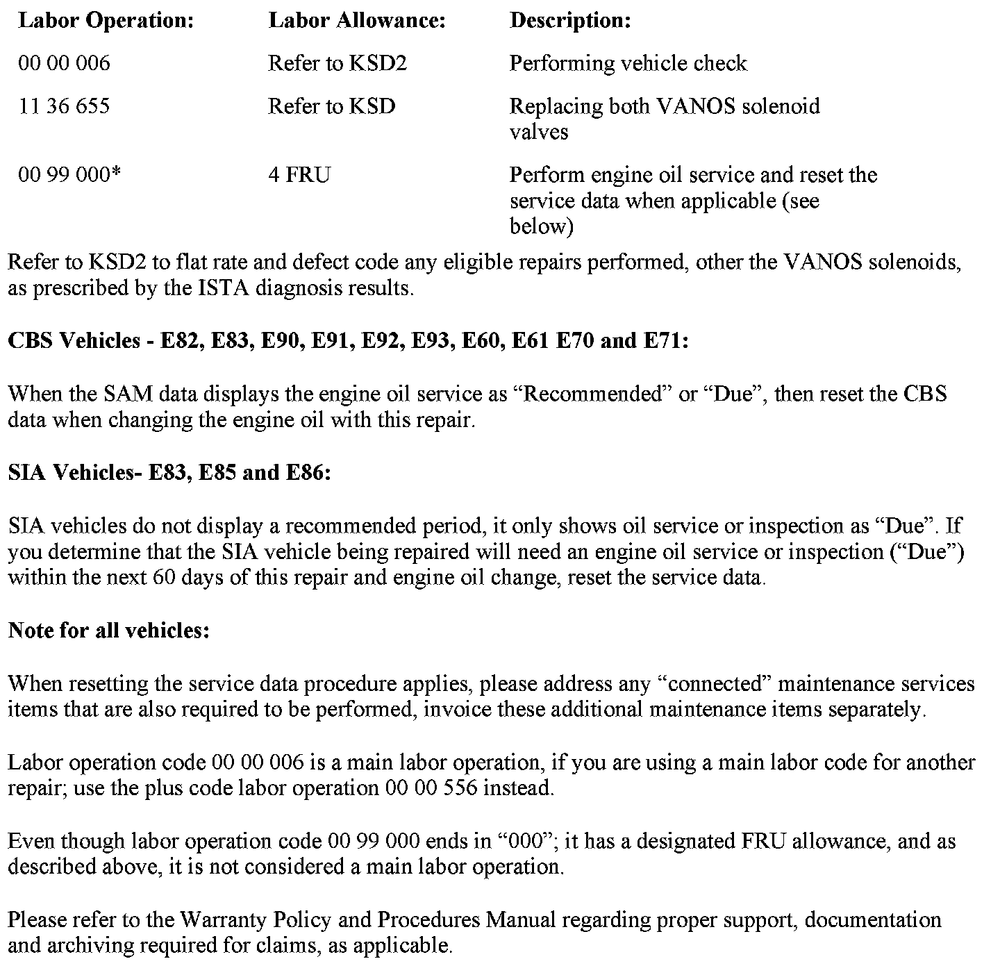

Engine - MIL/Reduced Power/Codes 2A82/2A87 Stored In DME
SI B11 02 08Engine
June 2011
Technical Service
This Service Information bulletin supersedes SI B11 02 08 dated March 2011.
[NEW] designates changes to this revision
SUBJECT
Power Reduction, FC 2A82 Intake VANOS and/or FC 2A87 Exhaust VANOS Camshaft Faults are Stored in DME

MODEL
SITUATION
The "Service Engine Soon" (MIL) lamp is illuminated and a power reduction is clearly perceptible. This situation can occur after driving for some time with the engine already at full operating temperature. If the ignition is cycled, the engine then usually performs normally.
The following faults are stored in the DME:
^ 2A82 VANOS intake - stiff, jammed mechanically
^ 2A87 VANOS exhaust - stiff, jammed mechanically
^ 3100 Boost-pressure control, deactivation - boost-pressure buildup prohibited (N54 only)
CAUSE
The VANOS faults can be caused by an insufficient oil pressure supply to the inlet VANOS adjustment unit. To effectively move the camshafts to the target positions in the specified time and under all engine conditions, sufficient oil pressure supply to the VANOS control pistons must always be available. When the engine operation requires that the VANOS quickly advance or retard the intake or exhaust camshaft, fault 2A82 or 2A87 may be set if the camshaft is "late", or does not reach the target position. In this situation, engine power may be reduced and a check control message is displayed. The consequential fault 3100 can also be set in the DME fault memory as well.
PROCEDURE
1. [NEW] Perform all applicable test plans completely for the faults stored.
[NEW] A mechanical restriction or electrical failure of the VANOS solenoid and/or the electrical circuit can cause insufficient oil supply to the VANOS assemblies as well.
[NEW] If the completed test plans results are inconclusive, then proceed to step 2.

2. [NEW] The oil filter cap insert may have been inadvertently removed during the vehicle's last oil service. If this insert is not installed, it will result in non-filtered engine oil being supplied to the engine, thus possibly clogging or damaging the VANOS solenoids.
[NEW] If the oil filter cap insert is found to be missing, the entire oil filter housing cap must be replaced (refer to the EPC).
[NEW] Note: Repairs related to step 2 are not considered a defect in materials or workmanship.
3. [NEW] Replace both VANOS solenoids, change the engine oil and filter, reset the service data only when applicable, as outlined in the Warranty Information section. Drive the vehicle to verify effectiveness.
If the oil filter cap insert is found to be missing, then the entire oil filter housing cap must be replaced (refer to the EPC). If excessive wear to the camshaft bearing ledge is found, it is only necessary to replace the camshaft hook ring seals and the affected camshaft bearing ledge.
N51, N52 and N52K intake camshaft bearing ledges and hook ring seals cannot be replaced separately. Cylinder head replacement requires a TeileClearing PuMA case.
[NEW] INFORMATION ONLY - CAMSHAFT BEARING LEDGE WEAR ASSESSMENT
While performing the test plan for the VANOS faults stored (ABL-DIT-B1214_NGNWA or E), the inspection of the camshaft hook ring seals is advised in "step 5 of these test plans".
Below are detailed illustrations of worn cam shaft bearing ledges, and the acceptable wear of the camshaft bearing ledge.
1. Camshaft bearing ledge

2. Intake camshaft
3. Hook ring seals

Note the deep grooves worn into the camshaft bearing ledge by the camshaft hook ring seals. The camshaft bearing ledge is worn.

Acceptable camshaft bearing ledge - minor gray wear marks from the rotation of the camshaft are normal. If deep groves are not apparent, the camshaft bearing ledge is acceptable and should not be replaced.

[NEW] PARTS INFORMATION


[NEW] WARRANTY INFORMATION